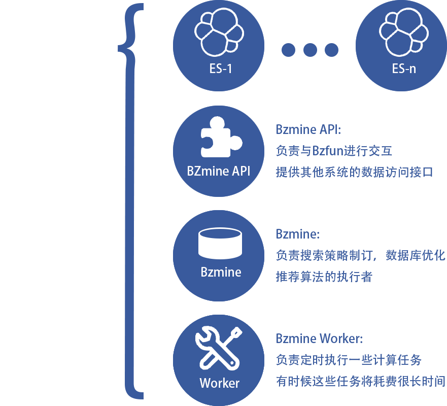
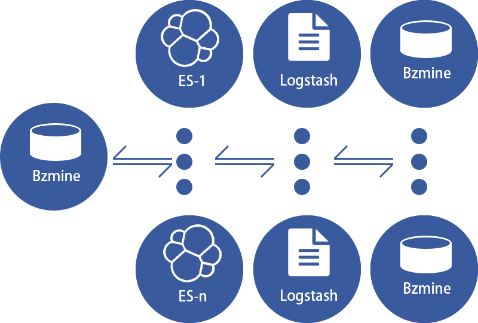
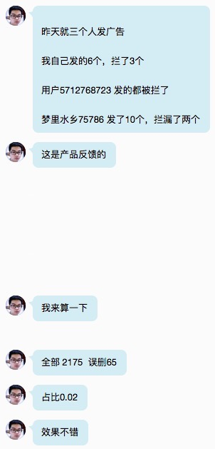

2015年工作述职
-- 数据挖掘组@上海 --
回顾·展望
Xu Xiaomeng
Baozou Technology
爆点TV数据基础服务Bzmine
Bzmine是爆点TV的数据基础服务，在一开始，它承担了爆点TV项目的各类搜索、查询以及推荐服务，慢慢的它开始承担日志分析的功能，并且负责一部分特殊的后台日志需求，这为日后爆点TV的日志系统规划提供了蓝图。
一开始的BZmine架构

推荐服务：
- 基于内容：当用户在观看一个视频时，向用户推荐与这个视频相似的视频。
- 基于用户数据：当用户在观看一个视频时，喜欢这个视频的用户也喜欢的视频
日志分析：
随着运营需求的不断扩大，简单的数据分析难以满足现状，所以Bzmine也承担起了复杂日志分析的功能，这部分功能需要对特定日志进行提取、预处理以及最终呈现。当初这部分内容通过Bzmine Worker定时处理，然而随着数据量不断扩大，这部分功能已经转移到了新的日志系统上。现在Bzmine只提供查询API。
日志分析系统
日志分析系统是为了应对日益增大的运营与开发需求从BZmine中分离出来的系统，这个系统最开始使用logstash进行日志分离和简单的处理，当前进过一次升级，分析功能已经部署在我们的分布式计算平台中。
一开始的日志系统架构

随着越来越复杂的日志需求，logstash的简单处理以及为了实现这些处理而编写的繁琐配置难以满足现状，也是随着分布式计算平台的上线，我们将logstash的处理部分迁移至kafka队列以及Spark平台。
离线及实时运算
为了应对海量数据运算以及方便各类计算开发，我们部署了Spark集群来进行分布式运算，当前，PIO推荐引擎，实时日志分析系统，离线任务系统都从中获取运算资源。我们开发了一套实时处理日志的系统，可以实现10秒级别日志实时分析。我们也开发了一套离线计算系统，这部分可以定时为更加复杂的计算提供支持。
Spark集群
反垃圾服务
随着和用户互动的数据增多，系统面临着垃圾消息的困境，我们为南京部门开发了反垃圾评论服务，它使用机器学习的方法，使反垃圾服务不断自我完善，越用越精准，改善低效的关键字法，解放大量手动过滤所需要的人力。

展望
随着项目用户急剧增加，我们也意识到数据对运营开发的重要性。爆点TV刚刚增加了用户评论的功能，日后这部分可以与现有的反垃圾服务整合。今年年初的日志量在短短一个月增加了近5倍，这是项目运营部门同事们的努力带来的成果，然而也是这对我们整个日志系统是一个不小的考验，幸运的是，通过良好的系统规划，我们可以很容易地在有限的资源中扩展系统计算能力，未来我们将更加完善这个系统，使得它能更好地为我们服务。
Data Mining
Thank you :)
Powered By fairy.js